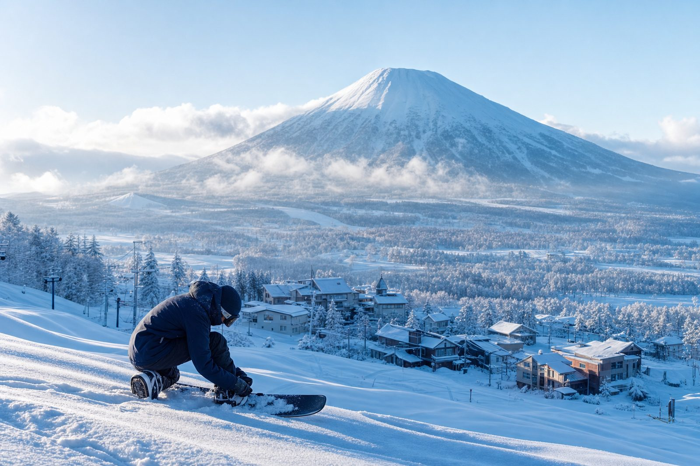
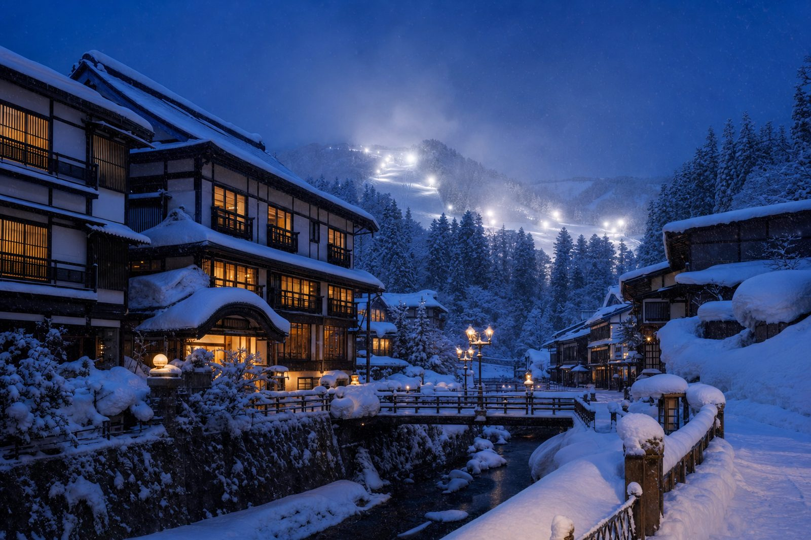
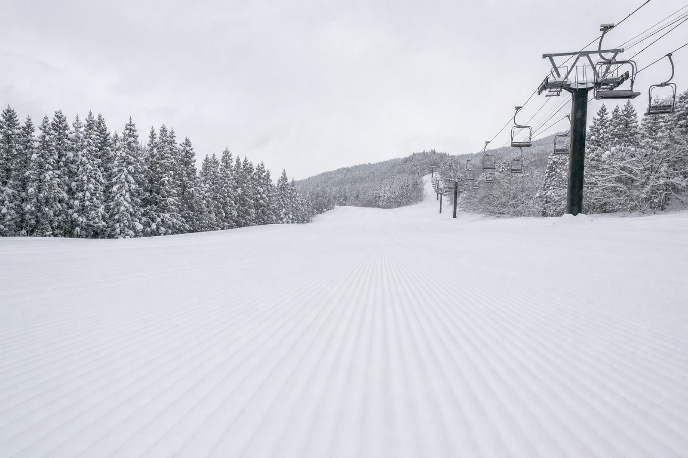
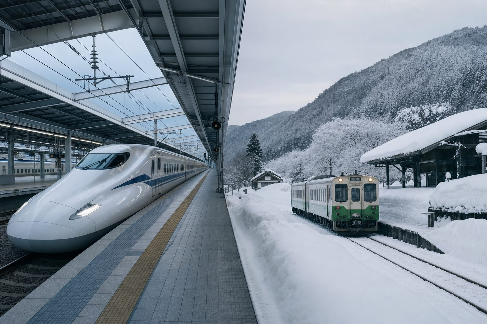
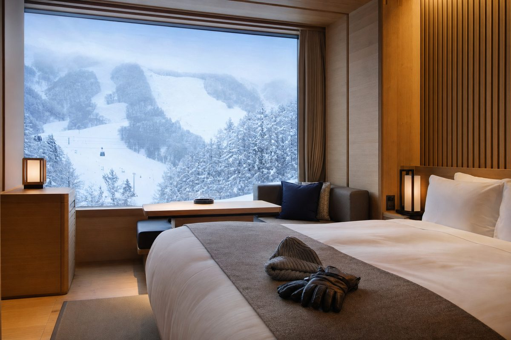
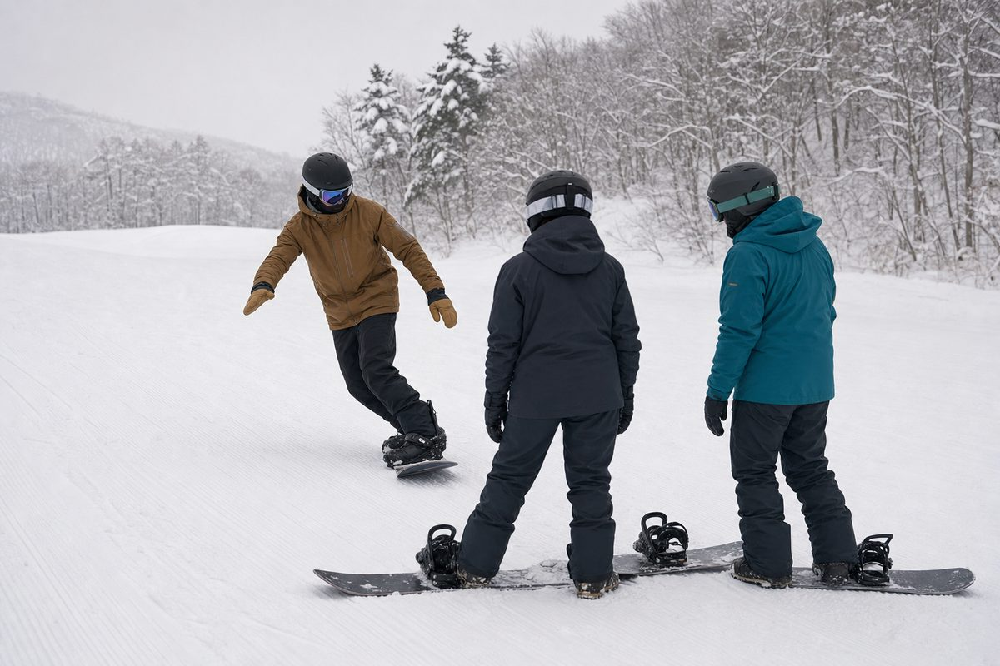
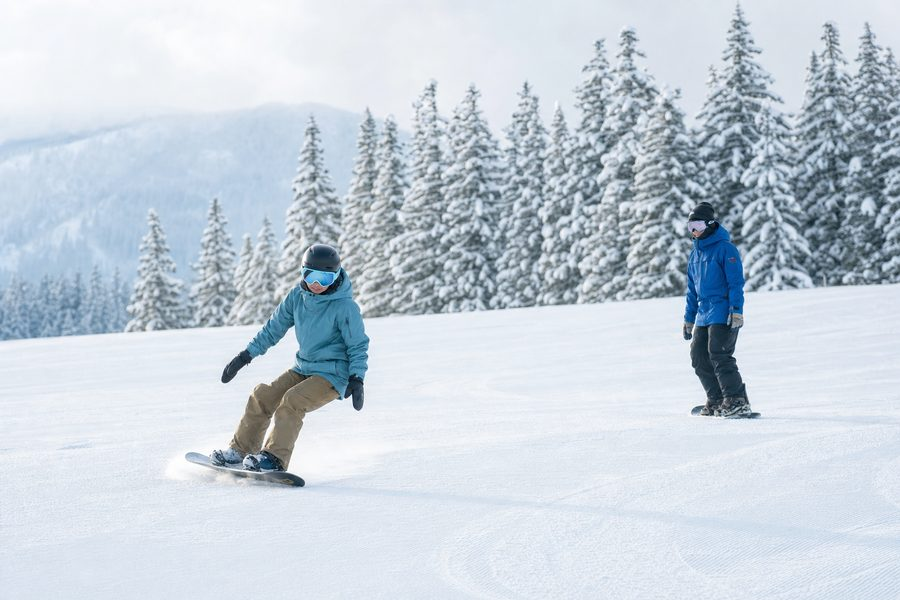
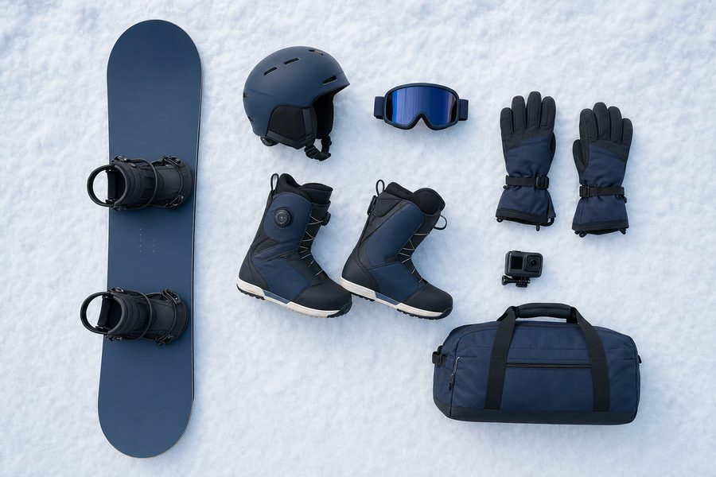
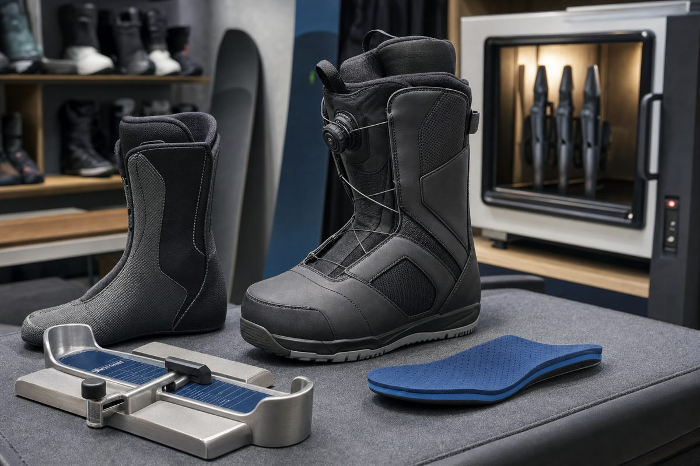

第 1 項
住宿仍未訂 — 唯一真正緊急的事
1月中下旬是妙高全季最貴、最早滿的檔期，而距出發已只有 148 天。目前仍未有任何 2027 年 1 月的實際報價。建議本週內鎖定 Akakura Kanko Hotel 或 Alpen Blick（Ikenotaira）其中一間可免費取消的房，先佔位再慢慢比價。
緊急
今日出現本季第一個有確切日期的票務動作：Akakura Onsen 公佈 2026-27 早割券於 9月1日（星期二）開售，距今只有 10 天。同日 Madarao 亦公佈 26/27 完整營業期，是第二個確認日期的雪場。住宿仍然是唯一真正緊急、而且未處理的一項。
只列出會改變決定的事。其餘細節放在下面各個可展開的分頁。
1月中下旬是妙高全季最貴、最早滿的檔期，而距出發已只有 148 天。目前仍未有任何 2027 年 1 月的實際報價。建議本週內鎖定 Akakura Kanko Hotel 或 Alpen Blick（Ikenotaira）其中一間可免費取消的房，先佔位再慢慢比價。
緊急官網公佈 2026-27 早割券於 9月1日（星期二）起發售，可經 Rakuten Ticket、Asoview、Pass Market 購買。這是本季第一個有確切日期的票務動作。同一頁亦承認官網因被不正常入侵而暫停瀏覽，所以短期內不要在該網站直接輸入信用卡資料。
重要2026年12月12日至2027年3月28日，完整覆蓋我們的行程窗口。這是第二個公佈 26/27 日期的雪場（第一個是 Suginohara）。同時公佈的季票（早割 ¥68,000）與 NAGANO 7 通行證（¥140,000 起）對只滑 4 日的我們並不划算 — 結論仍然是散買日票。
已確認現時是 8 月，大部分雪場網站仍停留在 25/26 的資料。以下逐個標明是否已更新到 26/27。


好消息：今日多了一個確認日期的雪場，而且兩個都完整覆蓋 1月17–25日。
對我們的意義：1月中屬全山纜車全開期，包括夜滑。斑尾雪質好、51 條雪道，但下山路線偏長，對初學者要挑對雪道。
對我們的意義：長緩坡最適合練 S-Turn 節奏與 carving 起步，是我們水平最合適的雪場之一。
其餘五個雪場（Akakura Onsen、Akakura Kanko、Ikenotaira、Seki Onsen、Tangram）仍未公佈 26/27 營業期。以往開季集中在 12月中至下旬，1月中必定全面營運，所以這不影響行程決定，只影響「哪日去哪個雪場」的細排。
今日讀取 akakura-ski.com 時，整個網站已換成一頁公告，內容大意是：網站發現不正常入侵（不正アクセス），為安全起見暫時停止瀏覽，正進行復原，請耐心等待。
實際影響：在官網完全復原之前，不要在該網站輸入信用卡或個人資料。
要買 Akakura Onsen 的票，改用它自己指定的第三方平台：Rakuten Ticket、Asoview、Pass Market。要查詢可直接打電話 0255-87-2125（雪場支配人）。
同一頁公告亦是今日 9月1日早割券開售這條消息的來源，詳情見下面「票務與通行證」一節。
初學者評價：緩坡多、雪道寬、溫泉街步行可達纜車，是我們最有可能住的一區。
初學者評價：中上段偏斜，但下段與 Akakura Onsen 連通，票可共用。適合有教練陪同時挑戰。
初學者評價：七個雪場中最適合我們現在的水平。450 m 寬度可以兩人並排練，不用怕撞人。
初學者評價：8.5 km 長緩坡，練節奏一流。但滑一趟很長，體力要夠。
初學者評價：今次不建議去。無壓雪、樹林粉雪為主，超出現時水平。
初學者評價：Tangram 有溫和的家庭雪道，Madarao 較有挑戰。要留意兩者離妙高高原站約 40 分鐘車程，屬另一個交通圈。
今日最大變化在這一節。結論沒有改變：散買日票，但現在多了一個要在 9月1日行動的窗口。
官方公告原文重點：2026-2027 賽季早割券預定 9月1日（星期二）開始發售，可於 Rakuten Ticket、Asoview、Pass Market 三個平台搜尋雪場名稱購買。
公告未寫明的部分（要 9月1日自己核對）：早割券的實際價格、券種（1日券／回數券／季票）、有效期，以及有沒有 Akakura Onsen + Akakura Kanko 共通券的早割版本。
我會在 9月1日的簡報自動追這一項。
視乎券種。如果早割只有季票，對只滑 4 日的我們不划算，跳過。如果有早割 1 日券或回數券（日本雪場常見做法，通常比現場價便宜 15–30%），那就值得買 4 張，因為 1 月中是旺季正價期。
另外一點：我們仍未決定住哪一區。買了 Akakura Onsen 的票就等於某程度上鎖定了住宿區域，所以先訂住宿、再買票這個次序不要倒轉。
今日 Madarao 一次公佈了兩個通行證方案。兩個都查清楚了，兩個都不要買。
早割期：2026年9月1日–10月31日。含 Tangram 纜車。另需 IC 卡保證金 ¥500。購買後不可取消退款。可用期由 2026年12月12日起。
| 券種 | 正價 | 早割價 |
|---|---|---|
| 大人（中學生以上） | ¥77,000 | ¥68,000 |
| 長者（55 歲以上） | ¥70,000 | ¥62,000 |
| 小學生（6–12 歲） | ¥36,500 | ¥32,500 |
| 幼童（5 歲以下） | ¥9,000 | ¥8,000 |
另有一個「斑尾全山 + 焼額山 + 奧志賀」加大版：大人正價 ¥95,000／早割 ¥85,000。這個版本涵蓋 Shiga Kogen 兩個區域，日後如果把行程改成妙高＋志賀兩地才值得再看。
長野北部七個雪場共通季票：Shiga Kogen、Nozawa Onsen、Madarao、Ryuoo、Tangram、Togakushi、Snow Resort Romance no Kamisama（26/27 新加入）。
| 期別 | 發售期 | 大人 | 高中生以下 |
|---|---|---|---|
| 超早割 | 10月1日–10月31日（網上） | ¥140,000 | ¥110,000 |
| 早割 | 11月1日–11月30日（網上） | ¥150,000 | ¥115,000 |
| 正價 | 12月1日–1月31日 | ¥160,000 | ¥120,000 |
選銀行轉帳可減 ¥2,000（僅超早割及早割期）。妙高地區的雪場不在這個通行證範圍內。
結論：兩個都跳過。4 日滑雪散買日票約 ¥27,000–32,000／人。最便宜的季票方案（Madarao 早割 ¥68,000）也要滑到 9–10 日才回本，而 NAGANO 7 要 20 日以上。
不過 NAGANO 7 這條消息有另一重意義：它證明 Shiga Kogen 與 Madarao／Tangram 屬同一票務生態。如果日後想把「妙高 vs 志賀」的取捨改成兩地都去，這個通行證就要重新計。
妙高地區的官方共通票網店（Mt Myoko 全山票）今日仍然零產品上架，26/27 尚未開賣。
同樣結論：對 4 日行程不划算。列在這裏只為追蹤 26/27 是否有新的短期共通券（例如 3 日或 5 日券），那種才有機會比散買便宜。
結論不變：不買任何跨國大通行證。US$1,019 折合約 ¥150,000 以上，遠超我們 4 日的散票成本，而且我們只滑一個地區。
住宿是整個行程唯一真正緊急的一項。交通有一個 10月1日的加價期限要留意。


1月中下旬是妙高最旺的檔期。距出發 148 天，好房、可取消房、家庭房會由現在起逐步消失，而不是到 12 月才突然滿。
優點：早上不用搭車，對初學者省很多體力。缺點：晚餐選擇少，離溫泉街要接駁。
優點：地形最配合現時水平，練習成本最低。缺點：夜生活與餐廳選擇比 Akakura 少。
建議動作（本週）：在 Booking.com 或旅館官網訂一間可免費取消的房，先鎖定日期。之後有更好選擇再改，成本是零。
現在不下單、等到有「最佳價」才訂，1 月旺季的實際結果通常是價格更高或只剩差房。
全程門到門約 2小時20分至2小時30分，加轉車緩衝實際計 3 小時較安全。帶雪具的話，轉車時間要多留 10 分鐘。
10月1日：JR Pass 換票證（Exchange Order）價格調整。如果打算用 JR Pass，10月1日前後的價差要自己核對。
坦白說：這條路線來回只用兩次新幹線，JR Pass 大機率不划算，散買指定席更便宜。但我暫時未能取得 Tokyo–Joetsu-Myoko 的實際票價（官方頁面以圖片顯示價格），所以未能給你確切數字比較。這一項已列入行動清單。
官網公告提到接駁巴士預約一時休止（暫時停止）。以 8 月而言這屬淡季正常安排，未必與網站入侵事件有關。
對我們沒有即時影響 — 1 月的接駁通常在 11–12 月才開放預約。但如果最後決定住 Akakura Onsen 區，這一項要在 11 月重新核對。
今日從官方網站取得 7 個雪場中的 6 份地圖檔，已存入 Google Drive 的 images/maps/。全部地圖的季度標示都要留意 — 見下方說明。
全部 7 份地圖現時都標記為「需核對」。原因：檔案本身沒有印上 26/27 季度，或檔名／頁面資料仍是 2025-26。日本雪場慣例是在 11–12 月才換上新季地圖，所以現在拿到的都是上一季版本。
雪道格局年復年變化很小，用來規劃「哪條雪道適合我們」完全夠用。但纜車營運範圍與雪道開放狀況要以 12 月的新版為準。
為甚麼卡片內沒有直接顯示地圖圖片：這些地圖是各雪場的版權素材，而這個 GitHub repo 是公開的。原始檔已完整存入你的 Google Drive Myoko2027 Assets Folder/images/maps/（私人），網頁只提供官方連結。
如果你想在網頁直接看到地圖縮圖，最乾淨的做法是把 repo 改為 private — 講一聲我就改，之後每日簡報都會直接嵌入地圖。
距出發 148 天。這是能否在 4 日內真正享受妙高的最大變數 — 比任何裝備或票務都重要。
提醒：你未有提供最新訓練更新。現時的水平估算（初級／進步中）仍是沿用之前的資料。
下次上完雪或做完 dryland 訓練後，簡單講幾句就夠 — 例如「今日練了 30 分鐘 heel edge，右轉仍然會 catch edge」。我會據此更新水平估算、下階段訓練計劃，以及在妙高應該報甚麼級別的課。


以現時水平，建議第 1 日報半日私人課（兩人共用一位教練），把 S-Turn 與速度控制修正好，之後 3 日自己練。
不建議報團體課 — 團體課節奏由最慢的人決定，4 日行程浪費不起。
現時唯一公佈 26/27 價格的學校是 Escape Myoko：每位教練每節 ¥30,000–59,000。以兩人共用計，半日私人課約 ¥15,000／人。
| 學校 | 26/27 價格 | 英語 | 備註 |
|---|---|---|---|
| Escape Myoko | ¥30,000–59,000／教練／節 | 強 | 唯一已公佈 26/27 價格 |
| Myoko Snowsports | 未公佈 | 強 | 有 Super 6 小組課，位於 Akakura |
| Canyons / Go Myoko | 未公佈 | 強 | 外國人經營，課程選擇多 |
| Yodel Snow | 未公佈 | 中等 | 日式經營，價格通常較低 |
私人課旺季（1 月）通常在 11–12 月就滿。決定住宿區之後就可以開始問價，不用等。
2027 年款雪板陣容已陸續公佈。你現時計劃的配置不需要改。


女款 Women's Mojo 亦是全新型號，US$459.95。
因為無改版，等到 11–12 月的季末／季初促銷再買，價格會更好。
結論：你計劃的配置（Bataleon Mojo 157 + FASE Blaster）不需要改。2027 年款反而讓 Mojo 成為更明確的初學者選擇。現在不用急買 — 先做 boot fitting。
雪靴是整套裝備裏唯一不能靠讀評測解決的一件。而它對進度的影響比雪板大得多。
這一項不用等任何消息，本月就可以做完。
以下項目我今日未有做研究，所以沒有給你建議。列出來是為了你知道缺口在哪：
如果你想我某一項先做，講一聲，下一日的簡報就會加進去。
勾選狀態會存在你的瀏覽器，明日的簡報仍會記得。
未到行動時機，但每日會自動追蹤的項目。
| 項目 | 現況 | 要等甚麼 |
|---|---|---|
| Akakura Onsen 官網 | 因入侵事件暫停瀏覽 | 復原公告 · 每日追 |
| Akakura Onsen 早割券內容 | 只知 9月1日開售 | 券種與價格 · 9月1日 |
| Mt Myoko 全山共通票 | 官方票務店零產品 | 26/27 上架 · 約 10 月 |
| 其餘 5 個雪場 26/27 日期 | 未公佈 | 官方公告 · 10–11 月 |
| 2027年1月住宿實價 | 未有任何實際報價 | 訂房平台開放 1 月房價 |
| Tokyo–Joetsu-Myoko 票價 | 官方以圖片顯示，未能讀取 | 需人手核對或用訂票平台 |
| JR Pass 換票證新價 | 10月1日調整 | 新價表 · 10月1日 |
| 26/27 雪場地圖新版 | 7 份全部標「需核對」 | 新季地圖上載 · 11–12 月 |
| 滑雪學校 26/27 價格 | 只有 Escape Myoko 公佈 | 其餘 3 間公佈 · 9–10 月 |
| 妙高積雪數據 | 8 月，無數據 | 開季後 · 12 月起 |
| Epic Pass 日本目的地 | 未核實 | 需要時再查 |
| 護具與發熱裝備 | 未研究 | 你指示後開始 |
全部於 2026年8月22日直接由官方網站讀取。高＝官方明文；中＝官方但過渡／不完整；低＝未能核實。